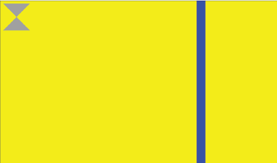

The following procedure describes how to use
Screen to capture a screenshot of a single display.
You can store the resulting screenshot in either a pixmap or window buffer for
further manipulation. This particular procedure describes capturing the screenshot in a pixmap buffer
and then writing the screenshot to a bitmap.
This sample application uses the components of a grey hourglass,
a moving blue vertical bar, and a yellow background. It aims to
demonstrate how to capture a screenshot using the
Screen API.
Figure 1. Screenshot Application

You will learn to:
- create a pixmap and buffer to store your screenshot
- retrieve appropriate pixmap properties to prepare for screenshot
- take your screenshot
- write your screenshot to a bitmap file
Before you begin
Before proceeding, you are expected to have already
created a privileged context using screen_create_context() with a context type
of SCREEN_DISPLAY_MANAGER_CONTEXT. In order to be able to create this privileged context,
remember that your process must have an effective user ID of root.
screen_context_t screenshot_ctx;
screen_create_context(&screenshot_ctx, SCREEN_DISPLAY_MANAGER_CONTEXT);
In the following procedure, the created context will be referred to as screenshot_ctx.
The targeted display will be referred to as screenshot_disp.
-
Create variables for the pixmap, the pixmap buffer, the pixmap buffer pointer, and the stride:
screen_pixmap_t screen_pix;
screen_buffer_t screenshot_buf;
char *screenshot_ptr = NULL;
int screenshot_stride = 0;
-
Create other variables necessary to support the
Screen API calls and the writing
of your screenshot to a bitmap.
In this procedure, you will declare several integer variables to help in setting the
pixmap and its properties. You will also need variables associated with the writing
of the screenshot to bitmap. For this example, a set path and filename are used. Ensure
that you have appropriate permissions to access the directory path of the file.
char header[54];
char *fname = "/accounts/1000/appdata/com.example.Tutorial_WindowApp."
"testDev_l_WindowApp85f8001_/data/hourglass_window_screenshot.bmp";
int nbytes;
int fd;
int i;
int usage, format;
int size[2];
-
Create the pixmap for the screenshot and set the usage flag and format properties:
screen_create_pixmap(&screen_pix, screenshot_ctx);
usage = SCREEN_USAGE_READ | SCREEN_USAGE_NATIVE;
screen_set_pixmap_property_iv(screen_pix, SCREEN_PROPERTY_USAGE, &usage);
format = SCREEN_FORMAT_RGBA8888;
screen_set_pixmap_property_iv(screen_pix, SCREEN_PROPERTY_FORMAT, &format);
-
Set the buffer size of the pixmap for the screenshot; the pixmap buffer size doesn't
have to necessarily match the size of the source.
Scaling will be applied to make the screenshot fit into the buffer provided.
size[0] = 200;
size[1] = 200;
screen_set_pixmap_property_iv(screen_pix, SCREEN_PROPERTY_BUFFER_SIZE, size);
-
Create the pixmap buffer for the screenshot and get the buffer handle, the pointer, and the stride.
Memory is allocated for your pixmap buffer; this is the buffer where the pixels
from the source window will be copied to:
screen_create_pixmap_buffer(screen_pix);
screen_get_pixmap_property_pv(screen_pix, SCREEN_PROPERTY_RENDER_BUFFERS,
(void**)&screenshot_buf);
screen_get_buffer_property_pv(screenshot_buf, SCREEN_PROPERTY_POINTER,
(void**)&screenshot_ptr);
screen_get_buffer_property_iv(screenshot_buf, SCREEN_PROPERTY_STRIDE,
&screenshot_stride);
-
Take the display screenshot:
screen_read_display(screenshot_disp, screenshot_buf, 0, NULL ,0);
This function takes five arguments: the target of the screenshot, the pixmap buffer, the number of rectangles
defining the area of capture, the array of integers representing rectangles of the area of capture, and the
mutex flag. The arguments related to the area of capture are 0 and NULL because in this
example you are capturing the target area in its entirety rather than a specific rectangular area. The
last argument (which represents the mutex flag) should always be 0.
-
Create the bitmap file with appropriate permissions; prepare the header and write the buffer contents to
the file. Afterwards, close the file:
fd = creat(fname, S_IRUSR | S_IWUSR);
nbytes = size[0] * size[1] * 4;
write_bitmap_header(nbytes, fd, size);
for (i = 0; i < size[1]; i++) {
write(fd, screenshot_ptr + i * screenshot_stride, size[0] * 4);
}
close(fd);
The value of nbytes represents the
calculated size of the bitmap and is used in the header
of the bitmap itself.
Although any instances created are destroyed when the
application exits, it is best practice to destroy any window,
pixmap, and context instances that you created but no longer
require.
In this example, you should destroy the pixmap that you created
to perform the screenshot. After the pixmap buffer has been
used to create the bitmap, the pixmap and its buffer are no
longer required. Therefore you should perform the appropriate
cleanup:
screen_destroy_pixmap(screen_pix);